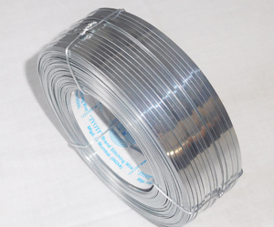

01 · The volume grade
G.I. stitching wire
Mild steel core, electroplated with zinc, rolled flat. It is the wire most Indian corrugated plants run and the baseline every other grade is priced against. For a carton that ships dry and is opened within a few weeks it is the correct engineering answer, not merely the cheap one.
FMCG cartons
Dry storage
Local distribution
| Property | Value |
|---|---|
| Base metal | Low carbon mild steel |
| Coating | Electro-galvanised zinc |
| Coating weight | 8 – 12 g/m² |
| Tensile strength | 700 – 900 N/mm² |
| Elongation | 2 – 6% |
| Flat sections | 20 to 26 gauge — 0.90 × 2.20 mm to 0.45 × 1.15 mm |
| Thickness tolerance | ± 0.02 mm |
| Width tolerance | ± 0.05 mm |
| Finish | Bright silver |
| Corrosion life | Low — dry storage only |
| Relative cost / kg | Baseline |
| Spools | 2, 5, 15, 25 kg — core to customer specification |
| Packing | Shrink-wrapped and palletised; VCI on request for export |